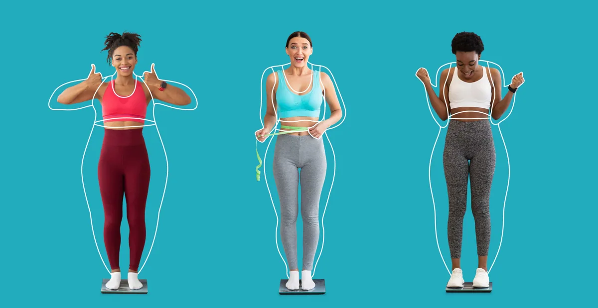

Perimenopause—Navigating The Many Symptoms of Pre Menopause
HRT.org journal
Provider-guided hormone therapy, at-home testing, and personalized treatment options for women and men.
Care from licensed clinicians.
Convenient testing, when needed.
Built around your needs and goals.
Care delivered to your door.
Start a conversation about the changes you’ve noticed.
Hormones touch everything — sleep, focus, energy, intimacy, recovery. We build care around all of it, with licensed providers, advanced labs, and treatments delivered to your door.
Your labs are one part of your story. Your provider considers them alongside your symptoms, history, and goals.
When testing is needed, your care team guides you through collection and reviews your results with you.
Collection methods and timing depend on your kit.
Order your kit through the secure HRT.org store for delivery to your door.
Follow the supplied collection instructions and use prepaid return shipping.
Your provider explains your results and discusses next steps.
See what comes next, from your first conversation to ongoing care.
Explore the care process
Share your symptoms, health history, and goals online.
A licensed provider reviews your history and recommends next steps.
Choose your test kit and follow its specific collection instructions.
If prescribed, your treatment is delivered discreetly to your door.
Provider check-ins and follow-up labs help guide ongoing care.
The test came quickly, was easy to understand the directions, return was easy, and received results that were easy to understand in a very timely manner. THANKS!

Health education →